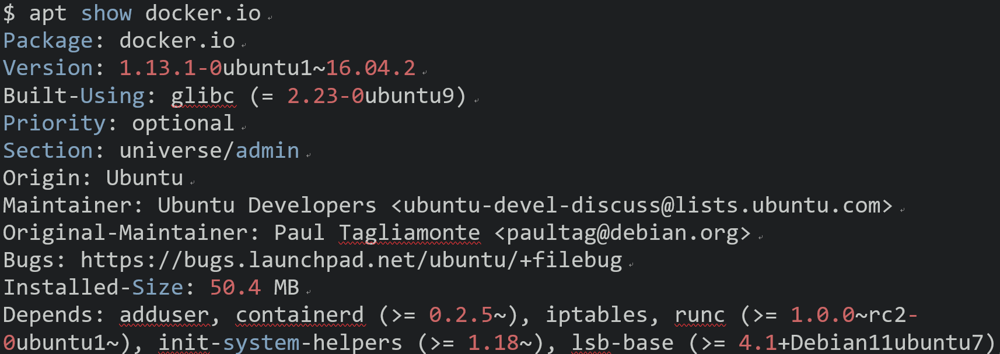
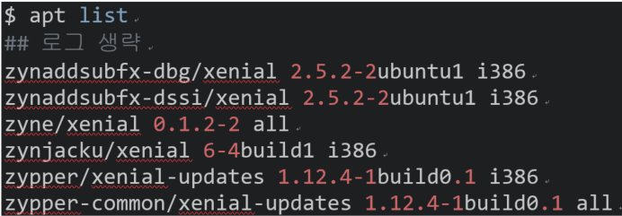

리눅스 자주 쓰는 Shell 커맨드
패키지 관련
apt provides a high-level commandline interface for the package management system. It is intended as an end user interface and enables some options better suited for interactive usage by default compared to more specialized APT tools like apt-get and apt-cache.
- “man apt”
- Ubuntu 패키지 관리 툴 명령어 apt
| apt 명령 | 설명 |
|---|---|
| $ apt update | Repository 패키지 인덱스 정보 업그레이드 |
| $ apt upgrade | 설치되어 있는 패키지 업그레이드 |
$ apt dist-upgrade |
의존성 검사하며 업그레이드 |
| $ apt install [패키지 이름] | 패키지 설치 |
$ apt --reinstall install [패키지 이름] |
패키지 재설치 |
| $ apt remove [패키지 이름] | 패키지 삭제 설정 파일 미포함 |
| $ apt purge [패키지 이름] | 패키지 삭제 설정 파일 포함 |
| $ apt autoremove | 불필요한 패키지 제거 |
| $ apt full-upgrade | 의존성 고려한 패키지 업그레이드 |
| $ apt search [키워드] | 키워드를 가진 패키지 검색 |
| $ apt show [패키지] | 패키지 상세 정보 출력 |
| $ apt list | Repository에 등록된 패키지 목록 조회 |
$ apt show docker.io로 도커 패키지 상세 정보 출력

$ apt list로 패키지 목록 조회

패키지 업데이트
- 패키지 목록: /var/lib/apt/lists
- 레파지토리 목록: /etc/apt/sources.list
압축
- tar 압축
$ tar -cvf aaa.tar abc- aaa.tar <== abc
- tar 압축 풀기
$ tar -xvf aaa.tar- aaa.tar ==> aaa
- tar.gz 압축
$ tar -zcvf aaa.tar.gz abc- aaa.tar.gz <== abc
- tar.gz 압축 풀기
$ tar -zxvf aaa.tar.gz- aaa.tar.gz ==> aaa
| Option | Description |
|---|---|
| -C | 파일 경로 지정 |
| -p | 파일 권한 저장 |
| -v | 파일 압축, 압축풀기 때 화면으로 출력 |
| -f | 파일 이름 지정 |
| -c | tar |
| -z | gz |
와일드카드, 정규식
- ^d: 시작 문자가 d
- hello*: hello~~~ 뒤엔 상관없는 모든 파일
- [ts]*: t 혹은 s로 시작하는 모든 파일
- [0-9]*: 0~9로 시작하는 모든 파일
- [a-zA-Z]*: a~z, A~Z로 시작하는 모든 파일
-
[!a-z]*: a~z로 시작 하지 않는 모든 파일
- [[:upper:]]*: 대문자로 시작하는 모든 파일
-
[![:upper]]*: 대문자로 시작하지 않는 모든 파일
- ?: 앞 문자 있어되고 없어도 되고!
- books?: 's'가 있어도되고 없어도된다. => book, books
- .: Don’t care 1문자
- book.: . 위치에 한 문자는 와야한다. => books, bookt, …
- $: 문자$ 에서 ‘문자’로 끝나는 것
- e$: xxxxxxe
- a{aa,bc,dd}: aaa abc add
- $ mkdir -p dir{1,2,3} => mkdir -p dir1 dir2 dir3
특수 파라미터
- $#: 파라미터 전체 갯수
- $?: 최근에 종료된 프로세스 return 값
- $-: set 내장명령을 통해 또는 쉘 자체에 의해(ex, -i) 설정된 현재 옵션 플래그로 확장한다.
- $$: 현재 쉘의 PID
- $!: 가장 최근 실행된 프로세스의 PID
- $0: 쉘 또는 쉘 스크립트의 이름을 가지고 있다.
- $_: 실행된 쉘 스크립트의 절대 경로를 가지고 있다.
- $[1~9]: 1~9번째 아규먼트
-
${10~}: 10번 째 아규먼트 부터
- ${#변수} : 몇 글자?
$ test="That that is is not not"
$ echo ${#test}
23
- ${변수:string 시작 idx} : 시작idx부터 끝까지
0123456789....
$ test="That that is is not not"
$ echo ${test:3}
t that is is not not
- ${변수:string 시작 idx:몇글자} : 시작 idx부터 몇 글자
0123456789....
$ test="That that is is not not"
$ echo ${test:3:5}
t that
shell cmd
find
- 현재 디렉터리 + 하위 디렉터리 파일 검색
$ find . -name "*STR" - 하위 디렉터리 검색하지 않음
$ find . -maxdepth 1 -name "FILE" - 파일 검색 후 삭제
$ find . -name "FILE" -delete - 파일, 디렉터리만 검색
$ find . -name "FILE" -type f
wc (갯수)
- 현재 디렉터리에서 디렉터리 개수
$ ls -l | grep ^d | wc -l - 현재 디렉터리에서 파일 개수
$ ls -l | grep ^- | wc -l - 현재 + 하위 디렉터리 recursive 디렉터리 개수
$ ls -Rl | grep ^d | wc -l
grep
wildcard 사용 말것!
ex) grep “*STR” (x), grep “STR” (o)
| Option | Description |
|---|---|
| -i | 대소문자 무시 |
| -r | 하위 까지 search |
| -v | 패턴 없는 것만 출력 |
| egrep “donald | trump” | 정규식 사용 |
- 현재 디렉터리의 *.c 파일에서 cp 문자열 찾기
$ grep "cp" ./*.c
- 현재 디렉터리 + “하위 디렉터리” *.c 파일에서 cp 문자열 찾기
$ grep -r "cp" ./*.c
function
- 명령어에 Argument로 커맨드 넣기
$ function m() { minicom -w -D/dev/ttyS${1}; }
$ function 10 # ${1] <= 10
- Argument로 cp
$ function cpresult() { cp ${1}result.csv ./result${2}.csv; }
echo
- -e: 개행 문자(“\n”) 사용케 함 (원래는 안됨)
$ echo -e 'hello \n'
hello
$ echo 'hello \n'
hello \n
- -n: 자동 줄바꿈 하지 않음
user@linux$ echo -n 'hello'
hellouser@linux$
- *: 현재 디렉터리 내용이 ‘ ‘ 공백문자를 두고 나옴
read
- read: 사용자로 부터 입력을 받음(스페이스도 받음, 엔터를 만나면 끝냄) ≒ gets()
$ read num
34 # num <= 34
$ echo $num
34
$REPLY
- $REPLY: read 명령어에서 사용하는 디폴트 변수
read 에서 따로 변수를 안두면 자동으로 저장됨
$ echo "Are you ready ?"
$ read
y
$ echo $REPLY
y
wc
- wc -c [파일]: 파일이 몇 Byte인가?
- wc -m [파일]: 파일 안에 글자 갯수는?
- wc -l [파일]: 파일 내 라인 수?
대입, 테스트
$(), $(())
- Command Substitution
$(command) : 명령 대체$ VAR=$(ipcs | awk '$2==2 ${print $1}') $ echo=$VAR - Arithmetic expansion
$((expression)) : 산술연산$ i=$(($i+1))
$(()) $[ ] 계산 대입 vs (()) [] 테스팅
# 계산 대입
i=5
i=$(($i+1))
i=$[$i+1]
# 테스팅
∨ # 띄워 쓰기!
if ((i<=1))
then
echo $i
fi
∨ ∨ ∨ ∨ ∨ # 띄워 쓰기!
if [ $i -le 1 ]
then
echo $i
fi
문자 비교
| 비교 문 | Description |
|---|---|
문자1 == 문자2 |
문자1과 문자2가 일치 시, true |
문자1 != 문자2 |
문자1과 문자2가 불일치 시, true |
-z 문자 |
문자 == null 시, true |
-n 문자 |
문자 != null 시, true |
문자 존재 유무
- 특정 문자 존재 유무
[[ ]] 반드시 두 개사용
string="abc"
if [[ $string =~ "a" ]]; then
echo "true"
else
echo "false"
fi
$ echo "Are you eady?"
$ read ; if [[ $REPLY =~ ^[yY]$ ]] ; then echo "true" ; fi
y
true
$
- [[ =~ ]]: 문자열 비교 패턴
- ^: 맨 첫글자 찾기
- $: 맨 끝 글자
- =~: 우측에 정규표현식 패턴을 사용
수치 비교
| 비교 문 | Description | 뜻 |
|---|---|---|
| 값1 -eq 값2 | 값1 == 값2 | equal |
| 값1 -ne 값2 | 값1 != 값2 | not equal |
| 값1 -lt 값2 | 값1 < 값2 | less than |
| 값1 -le 값2 | 값1 <= 값2 | less equal |
| 값1 -gt 값2 | 값1 > 값2 | greater than |
| 값1 -ge 값2 | 값1 >= 값2 | greater equal |
논리 연산
| 옵션 | Description |
|---|---|
| 조건1 -a 조건2 | AND |
| 조건1 -o 조건2 | OR |
| 조건1 && 조건2 | 양쪽 다 성립 |
| 조건1 || 조건2 | 한쪽 또는 양쪽 다 성립 |
| !조건 | 조건이 성립하지 않음 |
| true | 조건이 언제나 성립 |
| false | 조건이 언제나 성립하지 않음 |
파일 검사
$ if [ -f hi ] # hi가 파일이면 true
| 옵션 | Description |
|---|---|
| -e 파일명 | 파일이 존재 시 참 |
| -d 파일명 | 파일이 디렉터리면 참 |
| -h 파일명 | 파일이 심볼릭 링크 파일 |
| -f 파일명 | 파일이 일반 파일이면 참 |
| -r 파일명 | 파일이 읽기 가능이면 참 |
| -w 파일명 | 파일이 쓰기 가능이면 참 |
| -x 파일명 | 파일이 실행 가능이면 참 |
| -s 파일명 | 파일의 크기가 0이 아니면 참 |
| -u 파일명 | 파일의 set-user-id가 설정되면 참 |
( ) : sub shell group
- 내부 명령이 서브 쉘에서 실행되는 경우
$ u2dos() ( set -f; IFS=''; printf '%s\r\n' $(cat "$1") )
{ } : inline group
- 중괄호 안의 명령은 마치 하나의 명령처럼 취급된다.
$ { local v1; v1=123; }
배열
- 배열 선언 및 참조하기
#!/binb/ash
arr=(1 2 3 4 5 6 7 8 9 10 15 20 25 30)
echo "${arr[0]}" # 배열 idx 0번 참조
echo "${arr[*]}" # 배열 전부 출력
echo "${arr[@]}" # 배열 전부 출력
echo "${!arr[@]}" # 배열 인덱스 넘버 전부 출력
echo "${#arr[@]}" # 배열 size
echo "${#arr[0]}" # 배열 특정 인덱스 사이즈

- 배열 for文
#!/bin/bash
arr=(1 2 3 4 5 6 7 8 9 10 15 20 25 30)
for (( i=0 ; i < ${#arr[@]} ; i++ )) ; do
echo "${arr[$i]}" # 배열 사이즈
done
1
2
3
.. 쭉 echo
#!/bin/bash
classrom=(desk pen note chair book)
echo ${classroom[@]}
echo ${#classroom[@]}
for i in #{classroom[@]}; do
echo $i
done

연산자(expr)
- 역할: 숫자 계산
사용하는 경우 ` 를 사용해야한다. 연산자 *와 괄호 ( ) 앞에는 역 슬래시\와 사용 - 연산자, 숫자, 변수, 기호 사이에는 space를 넣어야 함
num=`expr \( 3 \* 5 \) / 4 + 7`
echo $num
10
if 文
- if
if [ 조 건 ]
then
명 령
fi
if [ 조 건 ]; then 명 령 ; fi
- if else
if [ 조 건 ]
then
명 령
else
명 령
fi
if [ 조 건 ]; then 명 령; else 명 령; fi
- if elif
if [ 조 건 ]
then
명 령
elif [ 조 건 ]
then
명 령
fi
if [ 조 건 ]; then 명 령; elif [ 조 건]; then 명 령; fi
while 文
i=1
while [ $i -lt 5 ]
do
echo $i
i=$(($i+1))
done
i=1; while [ $i -lt 5 ] ; do echo $i; i=$(($i+1)) ; done
for 文
for (( i = 0; i < 10 ; i++ ))
do
명 령
done
for (( i = 0; i < 10 ; i++ )); do 명 령 ; done
Network
port
- 현재 시스템의 포트 할당 확인
$ lsof -i -P -n | grep -i listen
시스템
우선순위
- 스케줄링 우선순위
$ nice [-n 조정수치] [cmd [arg..]]
| Option | Description |
|---|---|
| 無 옵션 | nice는 상속받은 현재의 스케줄링 우선권을 출력한다 |
| -n [조정수치] | - 조정수치 생략 시, nice = 10 - su 권한 시, nice = 음수 가능 - 우선순위: -20 (高 priority ↑↑↑) ~ 19 (低 priority ↓↓↓) |
마운트
- 마운트
$ mount [-fnrvw] [-t 파일시스템 유형] [-o 옵션] 장치명 디렉터리명 ex) $ mount -t vfat /dev/sdb1 /mnt/usb - 언마운트
$ unmount 장치명 디렉터리명
환경변수
환경변수 미리 지정된 변수
$ echo $HOME
/home/pllpokko
| ENV | Description |
|---|---|
| HOME | 사용자의 홈 디렉터리 |
| PATH | 실행파일을 찾는 경로 |
| LANG | 프로그램 사용 시 기본 지원되는 언어 |
| PWD | 사용자의 현재 작업하는 디렉터리 |
| TERM | 로그인 터미널 타입 |
| SHELL | 로그인해서 사용하는 쉘 |
| USER | 사용자의 이름 |
| DISPLAY | X 디스플레이 이름 |
| VISUAL | visual 편집기의 이름 |
| EDITOR | 기본 편집기의 이름 |
| COLUMNS | 현재 터미널이나 윈도우 터미널의 컴럼 수 |
| PS1 | 명령 프롬프트 변수 |
| PS2 | 2차 명령 프롬프트. 명령 행에서 사용하여 명령 행을 연장 햇을 때 나타냄 |
| BASH | 사용하는 bash 쉘의 경로 |
| BASH_VERSION | bash의 버전 |
| HISTFILE | history 파일의 경로 |
| HISTFILESIZE | history 파일의 크기 |
| HISTSIZE | history에 저장되는 갯수 |
| HISTCONTROL | 중복되어지는 명령에 대한 기록 유무를 지정하는 변수 |
| HOSTNAME | 호스트의 이름 |
| LINES | 터미널의 라인 수 |
| LOGNAME | 로그인 이름 |
| LS_COLORS | ls 명령의 색상 관련 옵션 |
| 메일을 보관하는 경로 | |
| MAILCHECK | 메일 확인 시간 |
| OSTYPE | 운영체제 타입 |
| SHLVL | 쉘의 레벨 |
| TERM | 터미널 종류 |
| UID | 사용자의 UID |
| USERNAME | 사용자 이름 |
which/whereis
- which: PATH 경로내 실행 파일 검색
- whereis: 실행 파일, 소스, 맨페이지 위치
$ which bash
/bin/bash
$ whereis bash
bash: /bin/bash /etc/bash.bashrc /usr/share/man/man1/bash.1.gz
vim
문자열 찾기
- 검색 문자열 뒤에 \c
# vim
/findstr\c